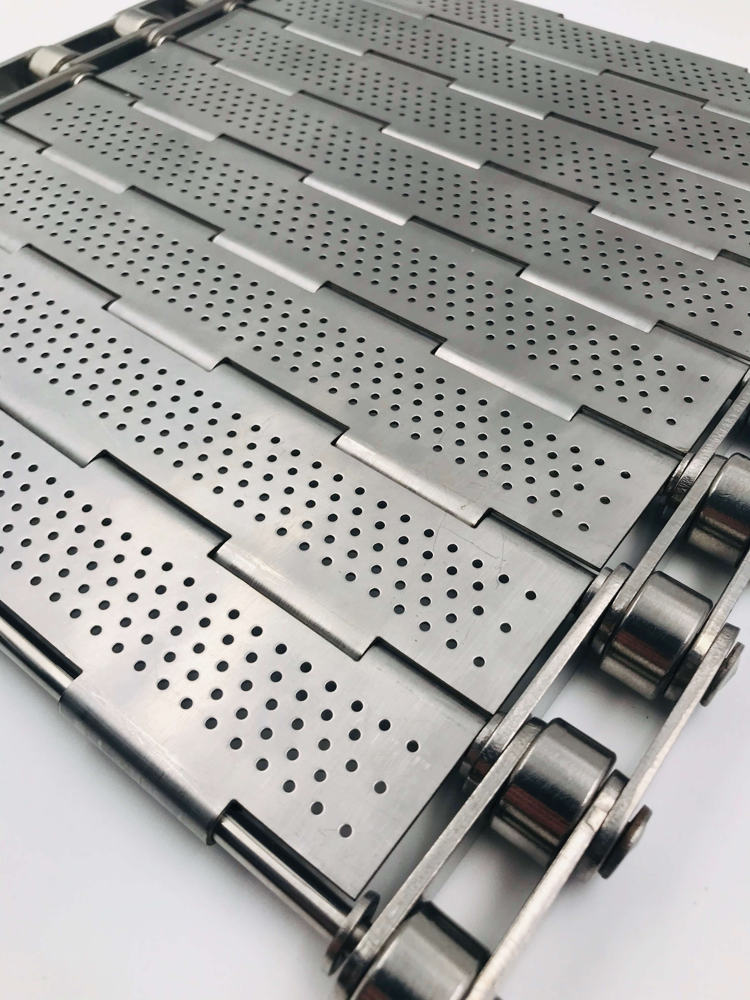
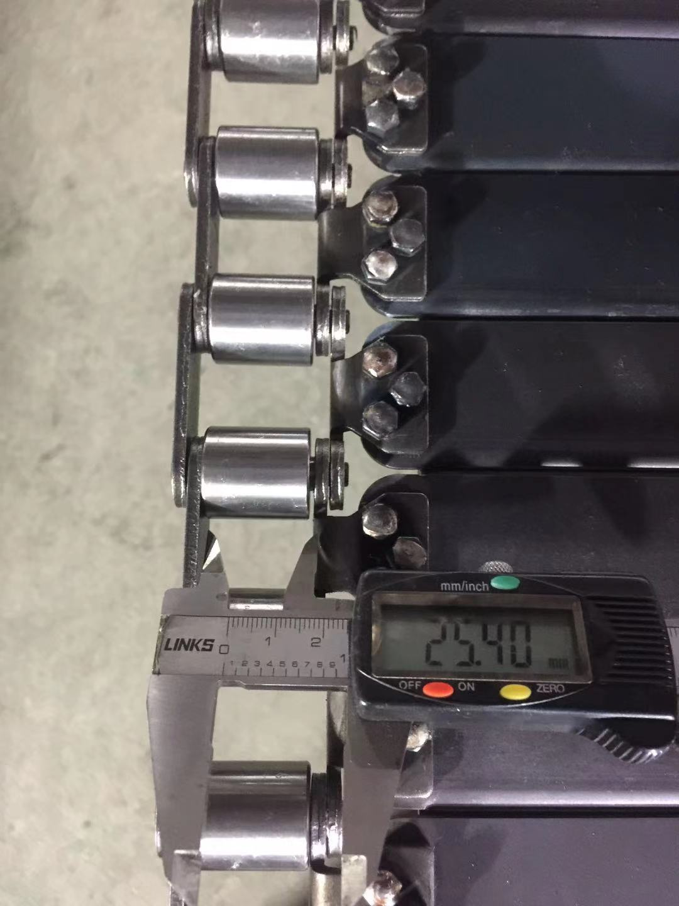
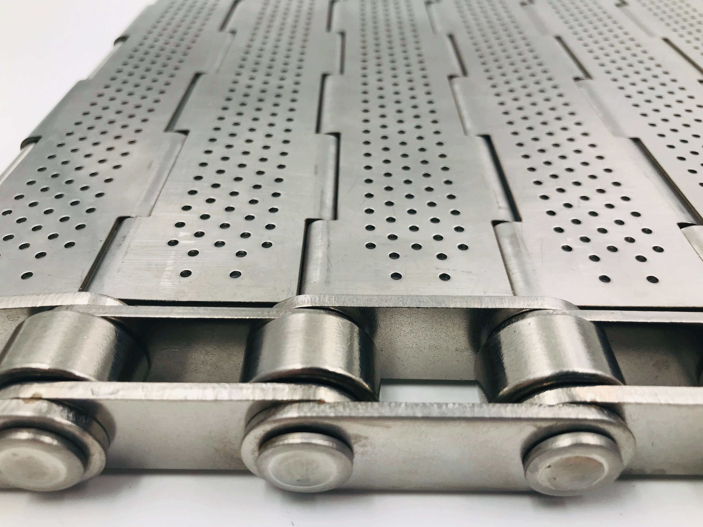
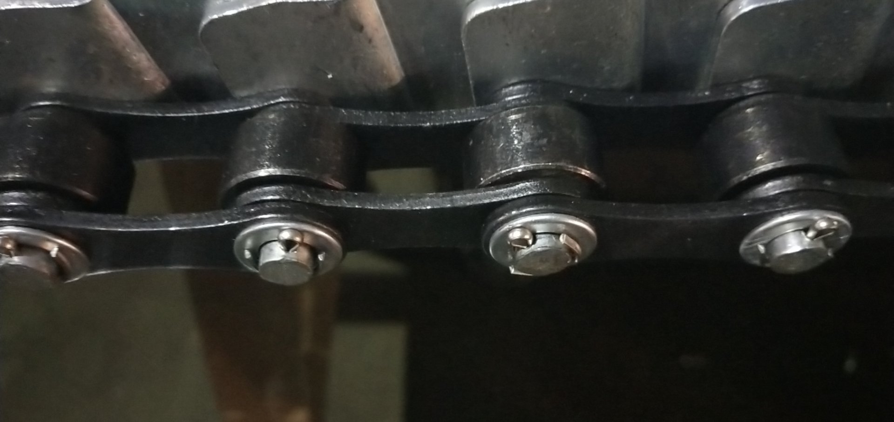
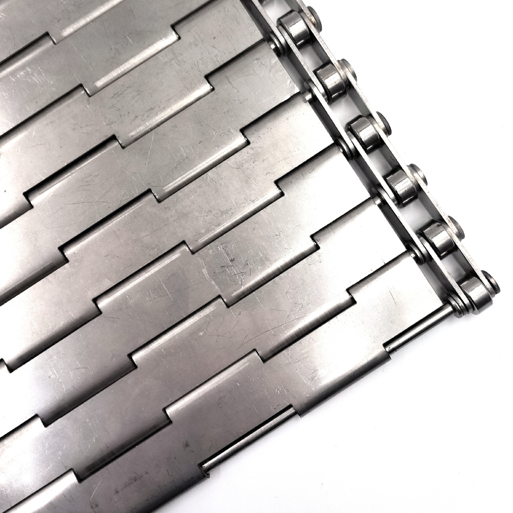
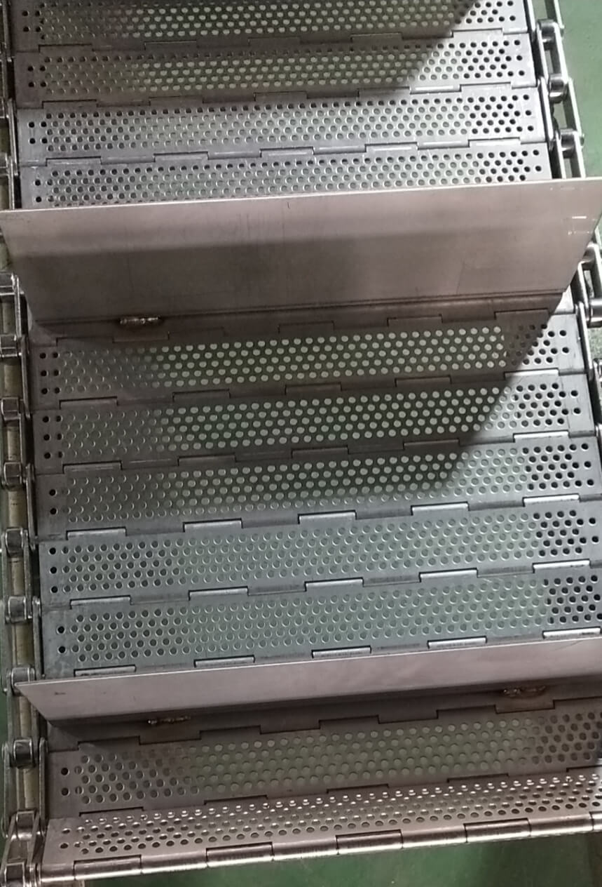

ISO 9001 CertifiedDrawing-Based ProductionSample Confirmation Available
HINGED PLATE CONVEYOR BELT · YIYI MESH BELT
Hinged Plate Conveyor Belt
For Flat Carrying Surface, Stable Conveying, and Configurable Industrial Transport
Hinged plate conveyor belts are designed for conveyor systems that require a flat carrying surface, positive drive stability, and strong structural support. Compared with open mesh belts, a hinged plate structure provides a more continuous conveying surface and can be configured with perforated plates, solid plates, side guards, cross flights, or lifting details according to application requirements. YIYI Mesh Belt manufactures hinged plate conveyor belts for washing, drying, cooling, baking, packaging, canning, and other industrial transport systems where stable conveying and controlled structure matter.
Not all conveyor applications can be served by open wire mesh belts. When products or containers require continuous flat support across the belt width - without sagging, without gaps, without mesh imprint - a hinged plate structure is the appropriate conveyor component. The plate surface distributes load evenly, supports stable transfer, and can be configured to match the drainage, airflow, or structural requirements of the process line.
Hinged plate conveyor belts are positive-drive systems - driven by side chains engaging sprockets - rather than friction-driven systems. This means tracking is controlled by the chain and sprocket geometry, not by tension alone. For heavy loads, inclined conveying, or applications where consistent speed and position matter, positive drive provides a more reliable and predictable conveying mechanism.
Flat product support without mesh imprintPlate surface provides continuous support across full belt width - suitable for containers, cans, boxed products, or any item that requires flat, stable carrying without mesh contact marks.
Positive drive - chain and sprocket controlledSide chains engage sprockets for positive drive - belt tracking and speed are controlled by chain geometry, not by tension. Suitable for heavy loads and inclined conveying.
Configurable perforation, guards, and flightsPlate structure, hole pattern, side guard height, and cross flight configuration adjusted to application - not fixed to a single standard format.
Heavy-duty and food-grade material optionsStainless steel SUS304, SUS316, and carbon steel - material selected to match environment, load, and hygiene requirements of the conveyor system.
OEM-ready and replacement-matchedDrawing-based production, sample confirmation before batch release, and replacement matching against existing system specifications - supported for both new projects and replacement orders.

Overall plate belt detail for flat carrying support
HINGED PLATE VS OPEN MESH - WHEN TO CHOOSE
▸Product needs flat, continuous surface support → Hinged plate
▸Positive drive required for heavy load or incline → Hinged plate
▸Drainage or airflow needed through surface → Perforated plate
▸Closed surface required → Solid plate
▸Inclined conveying with product retention → Cross flights
STRUCTURE OVERVIEW
How a Hinged Plate Conveyor Belt Is Built
A hinged plate conveyor belt is a chain-driven plate system. The plates carry the load; the side chains drive the belt; the connecting rods link plates to chains. Understanding each component's function helps confirm whether the belt configuration matches the application requirement.
COMPONENT 01
Hinged Plates
The flat carrying surface. Plates are stamped or formed to the required thickness, width, and profile - perforated or solid. Adjacent plates overlap or abut with a small gap to allow belt articulation around drive and return sprockets while maintaining a near-continuous surface during the conveying run.
COMPONENT 02
Side Chains
Chains run along each edge of the belt and engage the drive sprockets. Chain pitch, roller diameter, and plate attachment points must be confirmed together - they determine the belt's drive geometry, minimum bend radius, and compatibility with the sprocket and frame system.
COMPONENT 03
Connecting Rods / Shafts
Rods pass through the hinge points of adjacent plates, linking them to the side chains and to each other. Rod diameter, material grade, and rod spacing determine the structural strength of the assembled belt and the ease of on-site maintenance and rod replacement.
COMPONENT 04
Drive Integration
Side chain sprockets drive the belt positively - chain pitch and sprocket tooth geometry must match. YIYI Mesh Belt can review drive configuration and, where required, supply matched sprockets together with the belt to eliminate the engagement mismatch risk of separately sourced components.
COMPONENT 05
Optional Side Guards
Guards are attached to plate edges to prevent product from sliding off the belt sides - particularly relevant for inclined conveying, wet products, or applications where lateral retention is required. Guard height and attachment method confirmed to drawing.
COMPONENT 06
Optional Cross Flights
Flights are raised cross-members attached to the plate surface at defined intervals - used to push, carry, or retain products during inclined conveying or controlled positioning. Flight height, interval, and attachment confirmed to application requirement.
Product video: plate articulation and side-chain movement
Solid plate linkage and roller-chain detail
PLATE CONFIGURATION
Perforated and Solid Plate Options
The choice between perforated and solid plates is not simply a preference - it is determined by the process requirement. Selecting the wrong plate type creates problems that cannot be corrected after the belt is installed.
PERFORATED PLATE BELT
Perforated plates allow water, air, steam, or spray media to pass through the plate surface. The open area percentage, hole diameter, hole pattern (square pitch or staggered pitch), and minimum web between holes all affect both structural strength and functional performance.
Washing lines - water and cleaning spray drain through plate
Drying conveyors - airflow passes through surface
Pasteurisers - steam or hot water circulation through belt
Baking ovens - controlled heat transfer through perforation
CONFIRMATION NEEDED
Hole diameter, open area %, hole pattern, minimum web thickness - all confirmed against process requirement before production. Structural capacity must not be compromised by excessive open area.
SOLID PLATE BELT
Solid plates provide a closed carrying surface with no perforation. The full plate area carries the load, and no media passes through the belt surface. Solid plate belts are used where product contact with what is below the belt - liquids, debris, or other conveyors - must be prevented.
Packaging transport - stable, flat surface for boxed products
Heavy industrial transport - continuous surface under full load
Inclined conveying - plates prevent product rolling or sliding
NOTE ON PLATE THICKNESS
Solid plate load capacity is determined by plate thickness, plate width, rod spacing, and chain pitch. Plate thickness confirmed against load requirement - not assumed from nominal width alone.
Perforated plate surface for drainage and airflow
Solid plate belt for closed carrying support

Pitch and roller dimension confirmation before shipment
CONFIGURABLE STRUCTURES
Side Guards, Cross Flights, and Custom Plate Structures
The plate and chain structure of a hinged plate conveyor belt can be extended with guards, flights, and other attached structural elements. These are not accessories added after production - they are confirmed in the drawing review stage and produced as part of the belt assembly.
STRUCTURE 01
Side Guards
Raised edges attached along the belt sides to contain products within the belt width. Guard height, attachment method (welded, bolted, or formed from plate), and material grade confirmed to drawing. Required for inclined conveying, wet products, small containers, or wherever lateral product retention is needed.
STRUCTURE 02
Cross Flights
Raised transverse members attached to the plate surface at defined intervals across the full belt width. Used to push, carry, or position products - particularly on inclined conveyors where product would slide without positive retention. Flight height and interval confirmed to application geometry.
STRUCTURE 03
Centered Flights
Flights positioned at the center of the belt width - used where products need to be divided, oriented, or channeled during conveying. Arrangement and height confirmed to process flow design.
STRUCTURE 04
Lifting and Retaining Structures
Formed plate edges, bent plate forms, or welded retention structures on specific plate positions - used where product must be lifted, turned, or held in position at a specific point in the conveyor path. Confirmed to application drawing or specification.
STRUCTURE 05
Special Bent Plate Forms
Plates can be formed with specific bent profiles - upturned edges, angled ends, or shaped hinge areas - where the plate geometry serves a functional role beyond carrying. Confirmed to customer drawing before production.
STRUCTURE 06
Custom Edge and Direction Details
Plate direction, overlap orientation, edge finish, and plate-to-chain attachment detail can be varied according to conveyor system design. Confirmed in writing before production - not assumed from width or standard format alone.

Side guard detail for inclined or retained conveying

Edge finish with split pin and washer for service access
BUILT FROM REAL PROJECT LOGIC
What Gets Reviewed Before a Hinged Plate Belt Goes Into Production
A hinged plate conveyor belt is not quoted or produced from width and length alone. The system it runs in - its chain, sprocket, roller, frame, and drive geometry - determines whether the belt will install, run, and perform correctly. YIYI Mesh Belt reviews the full parameter set before production begins.
For OEM projects, drawing-based production covers all these parameters. For replacement projects, the existing belt and conveyor system are reviewed together to confirm that the replacement belt matches the actual installation - not just the nominal specification.
Overall width and center distanceBoth the net belt width and the chain center-to-center distance are confirmed - they determine how the belt sits in the frame and engages the drive.
Plate thickness, perforation, and patternThickness determines load capacity; perforation pattern and hole size determine drainage and airflow performance. Both confirmed to process requirement.
Chain pitch, chain model, and roller diameterChain pitch must match the sprocket on the conveyor drive. Chain model and roller diameter determine compatibility with existing chain guides and take-up mechanisms.
Rod diameter and rod spacingRod dimensions determine hinge strength and ease of rod replacement on site. Rod spacing affects plate articulation and minimum bend radius around the sprocket.
Side guard height and flight intervalWhere guards or flights are required, height and interval confirmed to application geometry - not set to a default value without checking conveyor headroom and product dimensions.
Material grade and application environmentSUS304 for general food contact, SUS316/316L for elevated corrosion resistance, carbon steel for non-food heavy-duty applications - material confirmed to operating environment and hygiene classification.
Sample-first confirmation for new OEM specsFor new specifications, a sample or first-piece section is produced and confirmed before the batch production order is released - reducing the risk of a full-batch mismatch.
Specification and dimension review before batch production
FULL PARAMETER CHECKLIST
✓Overall belt width✓Center distance✓Plate thickness✓Perforation pattern✓Rod diameter✓Rod spacing✓Chain pitch✓Chain model✓Roller diameter✓Side guard height✓Flight interval✓Material grade✓Drawing direction✓Application type
Surface Flatness, Burr Control, and Pre-Shipment Cleanliness
For a hinged plate conveyor belt, surface condition is not a cosmetic matter - it directly affects installation fit, product contact quality, and operational reliability. YIYI Mesh Belt applies consistent finishing and inspection standards before packing.
QUALITY POINT 01
Plate Flatness
Plates that are not flat affect conveying stability - uneven surfaces cause vibration under load, uneven product handling, or interference with the conveyor frame. Each plate section is checked for flatness before assembly. Warped or deformed plates are rejected before the belt is assembled.
QUALITY POINT 02
Burr-Free Edges
Cut and punched plate edges generate burrs during forming. Burrs left on plate edges or perforation holes create safety risks during handling, damage products in contact with the belt surface, and cause accelerated wear on seals, guides, or wipers that contact the belt edge. All edges deburred and inspected before assembly.
QUALITY POINT 03
Weld Cleaning
Welded attachment points - for guards, flights, or chain-to-plate connections - leave heat-affected zones and discoloration. These are cleaned after welding to remove scale and contamination before the belt enters service. For food-grade applications, weld areas are cleaned to the standard required by the process environment.
QUALITY POINT 04
Degreasing Before Assembly or Shipment
Oils and lubricants used during stamping and forming may remain on plate surfaces if not removed. Where food contact is involved - or where the customer specifies clean, dry delivery - plates are degreased before final assembly or before packing. Confirmed at the order stage, not assumed.
QUALITY POINT 05
Surface Scratch Control
Where surface condition matters - food contact, hygiene-sensitive, or visible installation applications - surface scratches are minimised during handling, stacking, and transport. Protection measures applied during packing to prevent post-production surface damage.
QUALITY POINT 06
Full Pre-Shipment Inspection
Before packing, each belt section undergoes a final dimensional check, surface inspection, and rod/chain assembly verification. Photos of the inspected belt - including edge condition, weld areas, and plate flatness - are taken and made available to the customer before shipment release.

Perforation and punched edge review
Fastener and edge assembly condition
Chain pitch and roller dimension check
Sample movement review before batch release
Dimension confirmation
Plate detail check
BEFORE BATCH PRODUCTION
Sample Confirmation Before Batch Production
For hinged plate conveyor belt projects - particularly OEM development orders and replacement projects - sample confirmation reduces the risk of a full-batch mismatch. A sample or first-piece section allows the customer to verify plate structure, dimensional accuracy, edge condition, and assembly quality before manufacturing is committed to a full production run.
Sample confirmation is not a separate service - it is a standard coordination step for projects where the specification is new, where the customer's system has specific installation requirements, or where batch-to-batch consistency must be confirmed against an approved reference.
First-piece confirmationThe first completed plate or belt section is inspected and photographed before full production continues. Dimensions, plate flatness, edge condition, rod position, and assembly quality are checked against the approved drawing.
Customer approval before batch releaseFor projects where this step is specified, batch production does not begin until the customer has confirmed the sample or first-piece result. The approval record is retained with the order.
Reduced mismatch risk for OEM and replacement ordersWhen a new belt must fit an existing conveyor system, sample confirmation provides a verification point before production is committed - particularly for chain pitch, rod position, and plate-to-chain attachment geometry.
Sample retained as batch referenceApproved samples are retained as the production reference for subsequent repeat orders - maintaining consistency without requiring re-confirmation of the full specification on each order.
Assembly fit and structural quality are verified before the belt is packed for shipment. For hinged plate conveyor belts with chain, rod, and plate assembled together, the verification step confirms that the assembly is correct - not just that individual components are within tolerance.
01
Rod and Assembly Fit Verification
Before packing, connecting rods are verified for fit through the hinge points of assembled plates. Rods that are out of tolerance or incorrectly formed would cause installation difficulty - this is checked before shipment, not discovered on site.
02
Chain and Plate Alignment Check
Chain attachment points, plate direction, and chain pitch geometry are verified in the assembled belt. Any plate-to-chain misalignment that would cause uneven running or structural stress is identified and corrected before the belt is released.
03
Plate Flatness and Surface Final Check
Final visual and dimensional inspection of plate surfaces, edge conditions, and weld areas. Any plate section that does not meet the flatness or surface quality standard is replaced before packing.
04
Photo Documentation Before Packing
Photos of the completed and inspected belt are taken before packing begins - including overall assembly, edge condition, rod ends, and any special structures such as guards or flights. Shared with customer before shipment release.
05
Export Packing Standard
Belt sections rolled or flat-packed to minimum bend radius, moisture-sealed with inner wrap, and crated in export-standard wooden box. Packing method confirmed against product dimensions and transport mode before packing begins.
Final movement and hinge-fit verification
Export packing proof
Pre-shipment measurement record
STANDARD DOCUMENTS WITH EVERY SHIPMENT
✓Material Test Report - alloy, tensile, composition
✓Final inspection record - dimensions and surface
✓Certificate of Origin - export customs support
→First-piece inspection record - on request for new OEM specs
TYPICAL APPLICATIONS
Where Hinged Plate Conveyor Belts Are Used
Hinged plate conveyor belts appear across food processing, industrial manufacturing, and packaging lines - wherever a flat, chain-driven carrying surface with configurable structure is required.
🛠️
Washing and Rinsing Lines
Perforated hinged plate belts are used in can washing, bottle washing, and parts washing lines - allowing spray and drainage through the plate while carrying containers stably through the washing zone. Plate and chain material selected for continuous wet operation.
🔌
Drying and Air-Cooling Conveyors
Perforated plates allow airflow through the belt surface - used in tunnel dryers, cooling conveyors, and blow-off systems where air must reach the underside of the product. Plate open area matched to airflow requirement.
🔥
Pasteurisers and Thermal Systems
Hinged plate belts in pasteuriser tunnels carry containers through hot and cold water zones. Plate and chain must withstand repeated thermal cycling - material and chain specification confirmed to operating temperature range.
🔧
Baking and Oven Conveyors
Solid or perforated hinged plate belts in baking ovens carry product through controlled temperature zones. Plate structure provides even heat distribution and stable product support - suitable for bread, biscuits, and formed food products.
💧
Canning Lines
Hinged plate belts carry filled cans, jars, or containers through sealing, pasteurising, coding, and packaging stages. Flat plate surface supports containers without tipping or imbalance - side guards added where lateral retention is required.
🕘
Packaging and Assembly Transport
Solid plate belts carry packaged products, cartons, or assembled parts through packaging lines, palletising systems, or assembly line conveyors - where a flat, positive-drive surface is required for controlled product positioning.
↗
Inclined Conveying with Flights
Cross flights attached to hinged plate belts carry bulk or individual products up inclines where gravity would otherwise cause sliding or rollback. Flight height and interval matched to product dimensions and incline angle.
⚙
Heavy-Duty Industrial Transport
Solid plate hinged belts in heavy industrial applications - parts conveying, foundry lines, or large-component transport - carry loads that exceed the capacity of wire mesh belts. Plate thickness, chain specification, and rod dimensions confirmed to load requirement.
Perforated chain plate for washing and drainage

Side guard structure for retained conveying
OEM AND REPLACEMENT SUPPORT
Drawing-Based OEM Production and Replacement Matching
YIYI Mesh Belt supports hinged plate conveyor belt projects as OEM manufacturer and as replacement supplier - with drawing-based production, sample confirmation, and structured coordination from specification to delivery.
Drawing-based productionCustomer drawings reviewed before production. All parameters confirmed in writing - width, chain pitch, plate thickness, rod diameter, hole pattern, guard height, material - before any material is prepared.
Sample-based review for replacement matchingFor replacement projects, an existing belt sample, worn section, or measurement record can be used as the production reference. Chain pitch, rod position, plate geometry, and perforation pattern reviewed against the sample before production.
Retained-sample consistency for repeat ordersApproved samples and production records are retained at YIYI Mesh Belt. Repeat orders reference the retained specification - no re-specification needed for established OEM SKUs. Faster lead time. Lower risk of specification drift.
Replacement matching against existing conveyor systemChain pitch, roller diameter, rod spacing, and plate attachment geometry reviewed against the existing conveyor system - not only against the old belt specification - to confirm that the replacement will install without system modification.
Extra connecting rods, pins, and spare partsSpare connecting rods, hinge pins, and matched spare parts are supplied with the main order - same alloy, same specification - to support on-site maintenance without requiring separate re-sourcing.
Replacement matching: plate surface and chain format
⚠ Common Replacement Risk
New Belt - Chain Pitch Does Not Match Existing Sprocket
A replacement belt ordered to plate width and length may have a different chain pitch from the original. Installation is delayed or requires sprocket replacement.
✓YIYI Mesh Belt Approach
Chain Pitch Confirmed Against Existing Sprocket Before Production
Chain pitch, roller diameter, and plate attachment confirmed against the existing system before production - not assumed from nominal specification alone.
⚠ Common Replacement Risk
Plate Thickness Changed - Load Capacity Reduced
A replacement belt with thinner plates than the original may not carry the operating load - causing plate deflection or permanent deformation after installation.
✓YIYI Mesh Belt Approach
Plate Thickness Confirmed Against Load Requirement, Not Just Sample Dimension
Plate thickness reviewed against application load and operating environment - not automatically copied from a worn sample without checking the functional requirement.
TECHNICAL SPECIFICATION
Technical Confirmation for Hinged Plate Conveyor Belts
The following parameters define a hinged plate conveyor belt. For new OEM projects, a drawing covering these parameters is the preferred input. For replacement projects, an existing belt sample combined with conveyor system measurements provides the same information. Send what you have - we will identify what else needs to be confirmed.
Technical Parameters - Hinged Plate Conveyor BeltAll Custom - No Standard Stock
Belt Width
Overall belt width from chain outer edge to chain outer edge - and net plate carrying width between chains. Both confirmed.
Center Distance
Chain center-to-chain center dimension - determines frame compatibility and chain guide placement. Confirmed separately from overall width.
Plate Thickness
Plate stock thickness - determines load capacity and deflection under operating load. Confirmed against load and plate span between rods.
Perforation Pattern
Hole diameter, pitch (square or staggered), open area %, and minimum web thickness - confirmed against drainage/airflow requirement and structural capacity.
Rod Diameter
Connecting rod diameter - determines hinge strength and ease of field replacement. Matched to chain attachment bore.
Rod Spacing
Distance between adjacent rods - determines plate articulation and minimum bend radius over the drive sprocket.
Chain Pitch
Chain pitch - must match drive and return sprocket geometry exactly. Most common: 25.4mm, 38.1mm, 50.8mm, 63.5mm, 76.2mm - but confirmed to drawing.
Chain Model
Chain series and attachment style - determines compatibility with existing chain guides, take-up mechanism, and lubrication system.
Roller Diameter
Chain roller outer diameter - determines clearance in chain guide track and engagement with sprocket root circle.
Side Guard Height
Guard height above plate carrying surface - confirmed to product dimensions and incline angle where applicable.
Flight Interval / Height
Cross flight spacing and projection height - confirmed to product dimensions and conveyor incline geometry.
Material Grade
SUS304 (standard food-grade), SUS316/316L (elevated corrosion resistance), Carbon Steel (heavy industrial, non-food). Fastener and rod material confirmed separately.
Application Type
Operating environment description - wet/dry, temperature range, product type, hygiene classification, and any chemical exposure.
Send a drawing, sample, or partial specification. Engineering response within 24 hours. Contact YIYI Mesh Belt →
Hinged plate conveyor belts are used in conveyor systems that require a flat, stable carrying surface - particularly where open wire mesh would be unsuitable. Primary applications include washing lines (can washing, bottle washing, parts washing), drying and air-cooling conveyors, pasteurisers and thermal processing tunnels, baking and oven conveyors, canning lines, packaging transport, inclined conveying with cross flights, and heavy-duty industrial transport. The plate structure provides continuous, flat product support and positive-drive stability via side chains engaging sprockets.
Perforated plate belts have holes punched through the plate surface - allowing water, air, steam, or spray media to pass through. They are used in washing, drying, pasteurising, and baking applications where process media must reach the product from below, or drainage must occur through the belt surface. Solid plate belts have no perforation - providing a completely closed carrying surface. They are used for packaging transport, assembly lines, heavy-duty transport, and applications where the product must be isolated from whatever is below the belt. Plate pattern, hole diameter, and open area percentage should be confirmed against the actual process requirement - not selected generically.
Yes. YIYI Mesh Belt can supply hinged plate conveyor belts with side guards, cross flights, centered flights, lifting or retaining structures, and other custom plate or edge details. Side guards are raised edges attached along the belt sides - preventing product from sliding off during inclined conveying or when handling wet or unstable products. Cross flights are raised transverse members attached at defined intervals - used to carry or retain products during inclined conveying. Guard height, flight height, and flight interval are all confirmed to the customer drawing before production begins.
Plate flatness directly affects conveying stability, product handling quality, and installation fit within the conveyor frame. A plate section that is not flat will cause uneven product contact across the belt surface - particularly relevant for containers, cans, or packaged products where tipping or imbalance is a risk. Non-flat plates also create vibration under load, which accelerates wear on guide rails, rollers, and chain components. For applications with hygiene requirements, surface irregularities in the plate also make cleaning more difficult. YIYI Mesh Belt inspects plate flatness before assembly and replaces non-conforming sections before the belt is packed.
Yes. Drawing-based production is the standard method for hinged plate conveyor belt projects at YIYI Mesh Belt. Customer drawings are reviewed before production - covering width, center distance, plate thickness, perforation pattern, rod diameter, chain pitch, chain model, roller diameter, side guard height, flight interval, and material grade. For replacement projects where a drawing is not available, an existing belt sample or measurement record is accepted as the production reference. Sample or first-piece confirmation is available before batch production is released for new specifications.
Yes. For replacement projects, YIYI Mesh Belt reviews the existing belt specification - including plate dimensions, chain pitch, rod diameter, roller size, perforation pattern, and edge structure - together with information about the existing conveyor system. The goal is to confirm that the replacement belt will install correctly without requiring sprocket changes, frame modification, or drive adjustment. Chain pitch matching is particularly important - a replacement belt with a different chain pitch from the original will not engage the existing sprockets correctly.
The most useful input is a customer drawing covering the full parameter set. If a drawing is not available, provide as much of the following as possible: overall belt width and center distance, plate thickness, perforation pattern and hole diameter (if perforated), rod diameter and spacing, chain pitch and chain model, roller diameter, side guard height (if required), flight interval and height (if required), material grade, belt length, and a description of the application and operating environment. A worn belt sample plus conveyor measurements can substitute for a drawing in most replacement projects. Send what you have - YIYI Mesh Belt will identify what needs to be confirmed and respond within 24 hours.
START YOUR PROJECT
Need a Hinged Plate Conveyor Belt for a Washing, Baking, Canning, or Replacement Project?
Send your drawing, sample, specifications, or application requirement to YIYI Mesh Belt. Our engineering team can help review plate structure, chain format, guard or flight details, and production feasibility for your conveyor system - with a response within 24 hours.